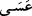

şeylerdir.
“Mü’minleri de teşvik et.” Mükafat ve cezâdan bahsederek yâhut zafer ve ganimet
vâdederek onları savaşa sevk et. Sana düşen yalnızca teşvik etmektir, yoksa onlara sert
davranmak değil.
Rivâyet edilir ki Rasûlullah (s.a.v.) Uhud Savaş’ından sonra Ebû Süfyan’la Zülkade
ayında küçük Bedir’in kurulduğu mevsimde tekrar savaşmak üzere sözleşti. Burası,
Medîne’ye sekiz mil mesâfede bulunan ve Hamrâü’l-Esed de denilen panayır yeridir.
Vakit gelince insanları savaş için Medîne’den çıkmaya davet etti. Ancak bazıları bunu
hoş karşılamadı. İşte Allah Teâlâ bu âyet-i kerîmeyi bunun üzerine indirdi. Hz.
Peygamber (s.a.v) yetmiş süvâri ile birlikte sefere çıktı. Allah’ın yardımı savaşta onlara
yetti. Nitekim Allah Teâlâ şöyle buyurmuştur: “Umulur ki Allah kafirlerin gücünü
kırar” sizinle savaşmalarını engeller. “Be’s” kelimesi aslında hoşa gitmeyen şeye
denir. Ancak sonraları harp ve savaş mânâsında kullanılmıştır. Allah Teâlâ: “Zâten
onların pek azı savaşa (be’se) gelir.” (el-Ahzâb, 33/18) buyurmaktadır.
“” fiili, Allah Teâlâ hakkında kullanıldığı zaman kesinlik (vücûb) ifâde eder.
Çünkü bu kelime lügatte ümit vermek mânâsındadır. Cömert biri ise ümit verdiği zaman
mutlaka yerine getirir. Nitekim Cenab-ı Hak kâfirlerin kalbine korku salmış ve onların
“Merrû’z-Zahrân”dan geri dönmelerini sağlayarak bunu yerine getirmiştir.
Hz. Peygamber (s.a.v.)’in ordusuyla birlikte Bedir’e gelerek sekiz gece konakladığı,
yanlarındaki ticârî malları satıp iyi bir kazanç elde ederek döndükleri rivâyet edilir. Bu
konu Âl-i İmrân sûresinde geçmişti.
“Allah’ın gücü” Kureyşt’en “daha çetin ve cezâsı” azâbı “daha şiddetlidir.” Öyle
bir azab ve cezâlandırma ki onları gören, onlara sebep olan fiilleri işlemekten imtinâ
eder. Bu iki durumun her ikisinin birden dünyâda olması da; birinin dünyâda diğerinin
âhirette olması da mümkündür.
Ayrıca bu âyetin üç tür açıklaması vardır:
1. Allah Teâlâ’nın azâbı, kâfirlerle savaşmaktan ötürü başınıza gelen bütün
sıkıntılardan daha şiddetlidir. Çünkü onların vereceği sıkıntılar, bir zaman sonra biter
ve nihâyet cennete girersiniz. Halbuki kâfirlerin ve münâfıkların başına gelen Allah’ın
azâbı devamlı ve kesintisizdir.
2. Allah’ın azabı bu kadar şiddetli olunca, Allah da kendisinden korkulmaya ve
savaşma emrine kesinlikle karşı çıkılmamaya daha layık olacaktır. Bu mânâya göre âyet
bir tehdittir.
3. Allah’ın azabı bu denli şiddetli olduğu için Allah, onları sizden uzaklaştırır ve
onlar hakkında size yeter. Bu mânâya göre ise âyet vaad mâhiyetindedir.
Cihaddan geri kalanlar, sırf kâfirlerin güç ve kuvvetlerinin şiddetinden korktukları
için böyle yaparlar. Oysa Allah, “kullarının üstünde yegâne kudret ve tasarruf
sâhibidir.” (el-En’âm, 6/18,61) Yakîn kuvveti, dînin sermâyesidir. Kâmil bir mü’minin,
özellikle cihâd yolunda ise armağını ölümdür. Dünyâ çabuk yok olur ve her hâlükarda
bâkî kalmaz. Ömer b. Hattâb (r.a) çoğu zaman şu beyitleri okurdu: